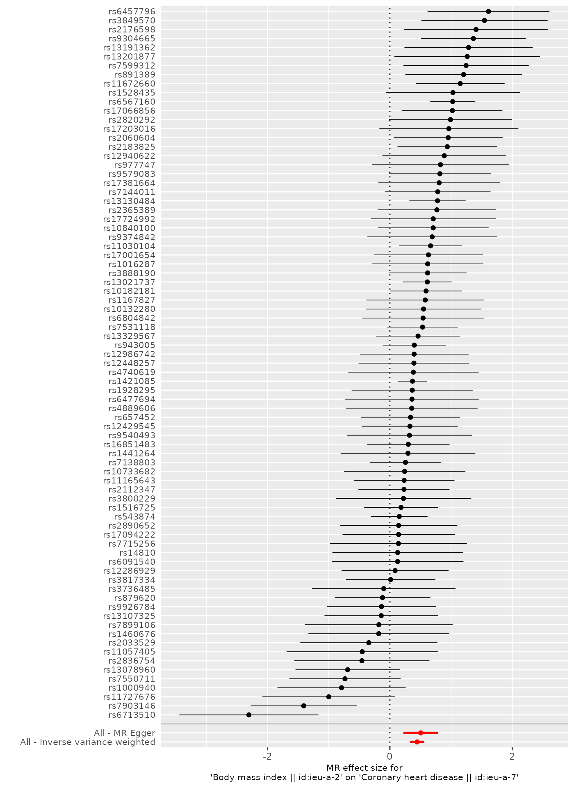

Perform MR
Gibran Hemani and Philip Haycock
perform_mr.RmdIntroduction
Let’s continue with the example of BMI on CHD:
bmi_exp_dat <- extract_instruments(outcomes='ieu-a-2')
#> API: public: http://gwas-api.mrcieu.ac.uk/
chd_out_dat <- extract_outcome_data(snps = bmi_exp_dat$SNP, outcomes = 'ieu-a-7')
#> Extracting data for 79 SNP(s) from 1 GWAS(s)
dat <- harmonise_data(bmi_exp_dat, chd_out_dat)
#> Harmonising Body mass index || id:ieu-a-2 (ieu-a-2) and Coronary heart disease || id:ieu-a-7 (ieu-a-7)Once the exposure and outcome data are harmonised, we have effects and standard errors for each instrument SNP available for the exposure and outcome traits. We can use this information to perform Mendelian randomisation. To do this, simply run:
res <- mr(dat)
#> Analysing 'ieu-a-2' on 'ieu-a-7'
res
#> id.exposure id.outcome outcome
#> 1 ieu-a-2 ieu-a-7 Coronary heart disease || id:ieu-a-7
#> 2 ieu-a-2 ieu-a-7 Coronary heart disease || id:ieu-a-7
#> 3 ieu-a-2 ieu-a-7 Coronary heart disease || id:ieu-a-7
#> 4 ieu-a-2 ieu-a-7 Coronary heart disease || id:ieu-a-7
#> 5 ieu-a-2 ieu-a-7 Coronary heart disease || id:ieu-a-7
#> exposure method nsnp b
#> 1 Body mass index || id:ieu-a-2 MR Egger 79 0.5024935
#> 2 Body mass index || id:ieu-a-2 Weighted median 79 0.3870065
#> 3 Body mass index || id:ieu-a-2 Inverse variance weighted 79 0.4459091
#> 4 Body mass index || id:ieu-a-2 Simple mode 79 0.3401554
#> 5 Body mass index || id:ieu-a-2 Weighted mode 79 0.3888249
#> se pval
#> 1 0.14396056 8.012590e-04
#> 2 0.07378603 1.562965e-07
#> 3 0.05898302 4.032020e-14
#> 4 0.15339111 2.949474e-02
#> 5 0.10439574 3.681566e-04This returns a data frame of estimates of the causal effect of the exposure on the outcome for a range of different MR methods.
If there were multiple exposures against multiple outcomes in dat, the mr() function will perform each MR method for each combination of exposure-outcome traits.
MR methods
The list of available MR methods can be obtained:
mr_method_list()
#> obj
#> 1 mr_wald_ratio
#> 2 mr_two_sample_ml
#> 3 mr_egger_regression
#> 4 mr_egger_regression_bootstrap
#> 5 mr_simple_median
#> 6 mr_weighted_median
#> 7 mr_penalised_weighted_median
#> 8 mr_ivw
#> 9 mr_ivw_radial
#> 10 mr_ivw_mre
#> 11 mr_ivw_fe
#> 12 mr_simple_mode
#> 13 mr_weighted_mode
#> 14 mr_weighted_mode_nome
#> 15 mr_simple_mode_nome
#> 16 mr_raps
#> 17 mr_sign
#> 18 mr_uwr
#> name PubmedID
#> 1 Wald ratio
#> 2 Maximum likelihood
#> 3 MR Egger 26050253
#> 4 MR Egger (bootstrap) 26050253
#> 5 Simple median
#> 6 Weighted median
#> 7 Penalised weighted median
#> 8 Inverse variance weighted
#> 9 IVW radial
#> 10 Inverse variance weighted (multiplicative random effects)
#> 11 Inverse variance weighted (fixed effects)
#> 12 Simple mode
#> 13 Weighted mode
#> 14 Weighted mode (NOME)
#> 15 Simple mode (NOME)
#> 16 Robust adjusted profile score (RAPS)
#> 17 Sign concordance test
#> 18 Unweighted regression
#> Description use_by_default
#> 1 TRUE
#> 2 FALSE
#> 3 TRUE
#> 4 FALSE
#> 5 FALSE
#> 6 TRUE
#> 7 FALSE
#> 8 TRUE
#> 9 FALSE
#> 10 FALSE
#> 11 FALSE
#> 12 TRUE
#> 13 TRUE
#> 14 FALSE
#> 15 FALSE
#> 16 FALSE
#> 17 Tests for concordance of signs between exposure and outcome FALSE
#> 18 Doesn't use any weights FALSE
#> heterogeneity_test
#> 1 FALSE
#> 2 TRUE
#> 3 TRUE
#> 4 FALSE
#> 5 FALSE
#> 6 FALSE
#> 7 FALSE
#> 8 TRUE
#> 9 TRUE
#> 10 FALSE
#> 11 FALSE
#> 12 FALSE
#> 13 FALSE
#> 14 FALSE
#> 15 FALSE
#> 16 FALSE
#> 17 FALSE
#> 18 TRUETo perform them, they can be specified in the mr() function, e.g. to only perform MR Egger regression and Inverse variance weighted methods,
mr(dat, method_list=c("mr_egger_regression", "mr_ivw"))
#> Analysing 'ieu-a-2' on 'ieu-a-7'
#> id.exposure id.outcome outcome
#> 1 ieu-a-2 ieu-a-7 Coronary heart disease || id:ieu-a-7
#> 2 ieu-a-2 ieu-a-7 Coronary heart disease || id:ieu-a-7
#> exposure method nsnp b
#> 1 Body mass index || id:ieu-a-2 MR Egger 79 0.5024935
#> 2 Body mass index || id:ieu-a-2 Inverse variance weighted 79 0.4459091
#> se pval
#> 1 0.14396056 8.01259e-04
#> 2 0.05898302 4.03202e-14By default, all the methods that are labelled TRUE in the use_by_default column are used by the mr() function.
Sensitivity analyses
Heterogeneity statistics
Some of the MR methods can also perform tests for heterogeneity. To obtain those statistics:
mr_heterogeneity(dat)
#> id.exposure id.outcome outcome
#> 1 ieu-a-2 ieu-a-7 Coronary heart disease || id:ieu-a-7
#> 2 ieu-a-2 ieu-a-7 Coronary heart disease || id:ieu-a-7
#> exposure method Q Q_df
#> 1 Body mass index || id:ieu-a-2 MR Egger 143.3046 77
#> 2 Body mass index || id:ieu-a-2 Inverse variance weighted 143.6508 78
#> Q_pval
#> 1 6.841585e-06
#> 2 8.728420e-06As with the mr() function, the mr_heterogeneity() function can take an argument to only perform heterogeneity tests using specified methods, e.g.
mr_heterogeneity(dat, method_list=c("mr_egger_regression", "mr_ivw"))
#> id.exposure id.outcome outcome
#> 1 ieu-a-2 ieu-a-7 Coronary heart disease || id:ieu-a-7
#> 2 ieu-a-2 ieu-a-7 Coronary heart disease || id:ieu-a-7
#> exposure method Q Q_df
#> 1 Body mass index || id:ieu-a-2 MR Egger 143.3046 77
#> 2 Body mass index || id:ieu-a-2 Inverse variance weighted 143.6508 78
#> Q_pval
#> 1 6.841585e-06
#> 2 8.728420e-06Horizontal pleiotropy
The intercept term in MR Egger regression can be a useful indication of whether directional horizontal pleiotropy is driving the results of an MR analysis. This can be obtained as follows:
mr_pleiotropy_test(dat)
#> id.exposure id.outcome outcome
#> 1 ieu-a-2 ieu-a-7 Coronary heart disease || id:ieu-a-7
#> exposure egger_intercept se pval
#> 1 Body mass index || id:ieu-a-2 -0.001719304 0.003985962 0.6674266Single SNP analysis
To obtain the MR estimates using each of the SNPs singly we can do the following:
res_single <- mr_singlesnp(dat)This returns a data.frame of results that is similar to the output from mr() except it performs the analysis multiple times for each exposure-outcome combination - each time using a different single SNP to perform the analysis.
The method used to perform the single SNP MR is the Wald ratio by default, though this can be changed, e.g. to use the fixed effects meta analysis method instead:
res_single <- mr_singlesnp(dat, single_method="mr_meta_fixed")The mr_singlesnp() function calculates the full MR using all available SNPs as well, and by default it uses the IVW and MR Egger methods. This can be specified as so:
res_single <- mr_singlesnp(dat, all_method="mr_two_sample_ml")will perform only the maximum likelihood method for the combined test.
Leave-one-out analysis
It is possible to perform a leave-one-out analysis, where the MR is performed again but leaving out each SNP in turn, to identify if a single SNP is driving the association.
res_loo <- mr_leaveoneout(dat)By default the method used is the inverse variance weighted method, but this can be changed by using the method argument.
Plots
There are a few ways to visualise the results, listed below
Scatter plot
We can depict the relationship of the SNP effects on the exposure against the SNP effects on the outcome using a scatter plot.
res <- mr(dat)
#> Analysing 'ieu-a-2' on 'ieu-a-7'
p1 <- mr_scatter_plot(res, dat)
#> Warning: Ignoring unknown aesthetics: textA scatter plot is created for each exposure-outcome test, and stored in p1 as a list of plots. For example, to plot the first scatter plot:

And to see how many plots there are:
length(p1)
#> [1] 1Lines are drawn for each method used in mr(dat), the slope of the line corresponding to the estimated causal effect. To limit which lines are drawn, simply specify the desired methods, e.g. to only draw MR Egger and IVW:
res <- mr(dat, method_list=c("mr_egger_regression", "mr_ivw"))
#> Analysing 'ieu-a-2' on 'ieu-a-7'
p1 <- mr_scatter_plot(res, dat)
#> Warning: Ignoring unknown aesthetics: textIt is possible to save this plot using the ggsave() function from the ggplot2 package, e.g. to save as a pdf
or save as a png
See ?ggplot2::ggsave for more info.
Forest plot
Use the mr_forest_plot() function to compare the MR estimates using the different MR methods against the single SNP tests.
res_single <- mr_singlesnp(dat)
p2 <- mr_forest_plot(res_single)
p2[[1]]
#> Warning: Removed 1 rows containing missing values (geom_errorbarh).
#> Warning: Removed 1 rows containing missing values (geom_point).
Here, the plot shows the causal effect as estimated using each of the SNPs on their own, and comparing against the causal effect as estimated using the methods that use all the SNPs.
To get plots that use different methods, specify them in the mr_singlesnp() function:
res_single <- mr_singlesnp(dat, all_method=c("mr_ivw", "mr_two_sample_ml"))
p2 <- mr_forest_plot(res_single)
p2[[1]]
#> Warning: Removed 1 rows containing missing values (geom_errorbarh).
#> Warning: Removed 1 rows containing missing values (geom_point).
Leave-one-out plot
Use the mr_leaveoneout_plot function to visualise the leave-one-out analysis:
res_loo <- mr_leaveoneout(dat)
p3 <- mr_leaveoneout_plot(res_loo)
p3[[1]]
#> Warning: Removed 1 rows containing missing values (geom_errorbarh).
#> Warning: Removed 1 rows containing missing values (geom_point).
Specify the test to use e.g. mr_leaveoneout(dat, method = mr_egger_regression) to use Egger regression.
Funnel plot
Asymmetry in a funnel plot is useful for gauging the reliability of a particular MR analysis. Funnel plots can be produced using the single SNP results as follows: howzit
res_single <- mr_singlesnp(dat)
p4 <- mr_funnel_plot(res_single)
p4[[1]]
1-to-many forest plot
A 1-to-many MR analysis interrogates the effect of a single exposure on multiple outcomes or multiple exposures on a single outcome. The results of this analysis can be visualised using the 1-to-many forest plot, with or without stratification on a categorical variable. From a visual point of view, the function works best for 50 or fewer results and is not really designed to handle more than a 100 results. If your number of results is much greater than 50, it may be better to split these across two separate plots. For example, if you have 100 sets of results you could divide these equally across two plots and then combine the two plots together in another programme like powerpoint. The function assumes the results are already in the right order for plotting. As such, users are advised to sort their results according to how they would like them to appear in the plot. Users can use their own code to do this or they can use the sort.1.to.many() function.
Step 1: generate 1-to-many MR results
exp_dat <- extract_instruments(outcomes=c(2,100,1032,104,1,72,999))
table(exp_dat$exposure)
chd_out_dat <- extract_outcome_data(
snps = exp_dat$SNP,
outcomes = 7
)
dat2 <- harmonise_data(
exposure_dat = exp_dat,
outcome_dat = chd_out_dat
)
res<-mr(dat2)Step 2. Make the 1-to-many forest plot
Example 1. Effect of multiple risk factors on coronary heart disease
In this example we wish to plot results from an MR analysis of the effect of multiple exposures on coronary heart disease, with results sorted by decreasing effect size (largest effect at the top of the plot) and with one MR method for each unique exposure-outcome combination. We will also make the size of each point estimate proportional to its inverse variance. This is a useful way to draw attention towards the most reliable results and away from results with very wide confidence intervals. To specify the size of the point estimate, set the weight argument to the name of the column in the data with the weight information.
res<-subset_on_method(res) #default is to subset on either the IVW method (>1 instrumental SNP) or Wald ratio method (1 instrumental SNP).
res<-sort_1_to_many(res,b="b",sort_action=4) #this sorts results by decreasing effect size (largest effect at top of the plot)
res<-split_exposure(res) # to keep the Y axis label clean we exclude the exposure ID labels from the exposure column
res$weight<-1/res$se
min(exp(res$b-1.96*res$se)) #identify value for 'lo' in forest_plot_1_to_many
max(exp(res$b+1.96*res$se)) #identify value for 'up' in forest_plot_1_to_many
forest_plot_1_to_many(res,b="b",se="se",
exponentiate=T,ao_slc=F,lo=0.3,up=2.5,
TraitM="exposure",col1_width=2,by=NULL,
trans="log2",xlab="OR for CHD per SD increase in risk factor (95% confidence interval)",weight="weight")It is also possible to add additional columns and column titles and to choose the size of the text in the columns:
res$pval<-formatC(res$pval, format = "e", digits = 2)
forest_plot_1_to_many(res,b="b",se="se",
exponentiate=T,ao_slc=F,lo=0.3,up=2.5,
TraitM="exposure",by=NULL,
trans="log2",xlab="OR for CHD per SD increase in risk factor (95% CI)",
weight="weight",subheading_size=11,
col1_title="Risk factor",
col1_width=2.5,
col_text_size=4,
addcols=c("nsnp","pval"),
addcol_widths=c(1.0,1.0),
addcol_titles=c("No. SNPs","P-val")
)In my own workflow I prefer to to keep the plot free of axis and column titles and to add them separately in a program like powerpoint:
forest_plot_1_to_many(res,b="b",se="se",
exponentiate=T,ao_slc=F,lo=0.3,up=3.0,
TraitM="exposure",col1_width=2.0,by=NULL,
trans="log2",xlab="",addcols=c("nsnp","pval"),
weight="weight", col_text_size=4,
addcol_widths=c(0.5,1.0),addcol_titles=c("",""))Example 2. MR results for multiple MR methods grouped by multiple exposures
In this next example we plot the results from an analysis of the effect of multiple exposures on coronary heart disease using multiple methods, with results grouped by exposure. We also want the result for the IVW method to be given priority and to go above the other methods. We also want the exposure with the largest IVW effect size to go the top of the plot. We also set the TraitM argument to the column describing the MR method. This is because we are grouping the results on the exposures. Normally the row labels would correspond to the exposures but in this example we want the row names to correspond to the MR method.
res<-mr(dat2)
res<-split_exposure(res) # to keep the Y axis label clean we exclude the exposure ID labels from the exposure column
res<-sort_1_to_many(res,group="exposure",sort_action=3,priority="Inverse variance weighted",trait_m="method")
forest_plot_1_to_many(res,b="b",se="se",
exponentiate=T,trans="log2",ao_slc=F,lo=0.03,
up=22,col1_width=2,by="exposure",TraitM="method",
xlab="OR for CHD per SD increase in risk factor (95% confidence interval)",
subheading_size=12,col_text_size=4)Example 3. Stratify results on a grouping variable
In this next example we plot the same results as above but with results stratified by a grouping variable. We also select one MR method for each unique exposure-outcome combination and sort the results by decreasing effect size within each group (i.e. largest effect at the top).
res<-mr(dat2)
res<-split_exposure(res)
res<-subset_on_method(res)
res$subcategory[res$exposure %in% c("Adiponectin","Hip circumference","Waist circumference")]<-"Group 1"
res$subcategory[is.na(res$subcategory)]<-"Group 2"
res$weight<-1/res$se
res<-sort_1_to_many(res,sort_action=1,group="subcategory")
forest_plot_1_to_many(res,b="b",se="se",
exponentiate=T,trans="log2",ao_slc=F,lo=0.3,
up=2.5,TraitM="exposure",col_text_size=4,col1_width=1.5,by="subcategory",
xlab="OR for CHD per SD increase in risk factor (95% confidence interval)",
subheading_size=14,weight="weight")In the above example we made up an arbitrary grouping variable called “subcategory” with values “Group 1” and “Group 2”. Typically, however, the grouping variable might correspond to something like a trait ontology (e.g. anthropometric and glycemic traits) or study design (e.g. MR and observational studies).
Example 4. Effect of BMI on 103 diseases
The plot function works best with 50 or fewer rows and is not really designed to handle more than a 100. Visualising a single-column forest plot with 100 results is also quite difficult. If your number of results is much greater than 50, it is advisable to split the results across two different plots. In the example below we select BMI as the exposure and test this against 103 diseases in the IEU GWAS database:
exp_dat <- extract_instruments(outcomes=2) #extract instruments for BMI
ao<-available_outcomes()
ao<-ao[ao$category=="Disease",] #identify diseases
ao<-ao[which(ao$ncase>100),]
dis_dat <- extract_outcome_data(
snps = exp_dat$SNP,
outcomes = ao$id
)
dat3 <- harmonise_data(
exposure_dat = exp_dat,
outcome_dat = dis_dat
)
res<-mr(dat3,method_list=c("mr_wald_ratio","mr_ivw"))
res<-split_outcome(res) # to keep the Y axis label clean we exclude the exposure ID labels from the exposure column
res<-sort_1_to_many(res,b="b",sort_action=4) #this sorts results by decreasing effect size (largest effect at top of the plot)MR results for 103 diseases can be difficult to visualise in a single-column forest plot. In my own workflow I would split these across two plots and then join them together in a separate program, such as powerpoint, and do further refinements there. I typically save my plots using the pdf() graphics device. In this particular example the disease labels probably require some cleaning up (some are a bit long) or alternatively the column text size could be made smaller. It is also possible to change the colour of the plot and the shape of the point estimates. Type ?forest_plot_1_to_many for further details.
res1<-res[1:52,]
res2<-res[53:103,]
plot1<-forest_plot_1_to_many(res1,b="b",se="se",
exponentiate=T,trans="log2",ao_slc=F,lo=0.004,
up=461,col1_width=2,TraitM="outcome",
col_text_size=3,xlab="")
plot2<-forest_plot_1_to_many(res2,b="b",se="se",
exponentiate=T,trans="log2",ao_slc=F,lo=0.004,
up=461,col1_width=2,TraitM="outcome",
subheading_size=11,col_text_size=3,xlab="")
plot1
plot2
pdf("plot1.pdf",height=10,width=8)
plot1
dev.off() MR.RAPS: Many weak instruments analysis
MR.RAPS (Robust Adjusted Profile Score) is a recently proposed method that considers the measurement error in SNP-exposure effects, is unbiased when there are many (e.g. hundreds of) weak instruments, and is robust to systematic and idiosyncratic pleiotropy. See the arXiv preprint for more detail about the statistical methodology.
MR.RAPS is implemented in the R package mr.raps that is available on CRAN. It can be directly called from TwoSampleMR by
MR.RAPS comes with two main options: over.dispersion (whether the method should consider systematic pleiotropy) and loss.function (either “l2”, “huber”, or “tukey”). The latter two loss functions are robust to idiosyncratic pleiotropy. The default option is over.dispersion = TRUE and loss.function = “tukey”. To change these options, modify the parameters argument of mr by (for example)
res <- mr(dat, method_list = c("mr_raps"), parameters = list(over.dispersion = FALSE, loss.function = "l2"))Reports
A report can be generated that performs all MR analyses, sensitivity analyses, and plots, and presents them in a single self-contained html web page, word document, or pdf document.
mr_report(dat)By default this produces a html file in the current working directory, but see the help pages on how to modify this.
This function will create a separate report file for every exposure-outcome combination that is present in the dat object.
MR Steiger directionality test
This is an implementation of the method described here:
In MR it is assumed that the instruments influence the exposure first and then the outcome through the exposure. But sometimes this is difficult to evaluate, for example is a cis-acting SNP influencing gene expression levels or DNA methylation levels first? The causal direction between the hypothesised exposure and outcomes can be tested using the Steiger test [reference to go here]. For example:
out <- directionality_test(dat)
#> r.exposure and/or r.outcome not present.
#> Calculating approximate SNP-exposure and/or SNP-outcome correlations, assuming all are quantitative traits. Please pre-calculate r.exposure and/or r.outcome using get_r_from_lor() for any binary traits
#> Estimating correlation for quantitative trait.
#> This method is an approximation, and may be numerically unstable.
#> Ideally you should estimate r directly from independent replication samples.
#> Use get_r_from_lor for binary traits.
#> Estimating correlation for quantitative trait.
#> This method is an approximation, and may be numerically unstable.
#> Ideally you should estimate r directly from independent replication samples.
#> Use get_r_from_lor for binary traits.
kable(out)| id.exposure | id.outcome | exposure | outcome | snp_r2.exposure | snp_r2.outcome | correct_causal_direction | steiger_pval |
|---|---|---|---|---|---|---|---|
| ieu-a-2 | ieu-a-7 | Body mass index || id:ieu-a-2 | Coronary heart disease || id:ieu-a-7 | 0.0158082 | 0.0013505 | TRUE | 0 |
It calculates the variance explained in the exposure and the outcome by the instrumenting SNPs, and tests if the variance in the outcome is less than the exposure.
This test is, like many others, liable to give inaccurate causal directions under some measurement error parameters in the exposure and the outcome (e.g. if the outcome has much lower measurement precision then its proportion of variance explained will be underestimated). Sensitivity can be applied to evaluate the extent to which the inferred causal direction is liable to measurement error, in two ways.
- Provide estimates of measurement error for the exposure and the outcome, and obtain an adjusted estimate of the causal direction
- For all possible values of measurement error, identify the proportion of the parameter space which supports the inferred causal direction
These tests are obtained using:
mr_steiger(
p_exp = dat$pval.exposure,
p_out = dat$pval.outcome,
n_exp = dat$samplesize.exposure,
n_out = dat$samplesize.outcome,
r_xxo = 1,
r_yyo = 1,
r_exp=0
)Multivariable MR
When SNPs instrument multiple potential exposures, for example in the case of different lipid fractions, one method for overcoming this problem is to estimate the influence of each lipid conditioning on the effects of the SNPs on the other lipids. Multivariable MR can be performed using the R package as follows.
The GWAS IDs for HDL, LDL and total cholesterol are ieu-a-299, ieu-a-300 and ieu-a-302. The GWAS ID for coronary heart disease (CHD) is ieu-a-7. In this example we will estimate the multivariable effects of HDL, LDL and total cholesterol on CHD.
id_exposure <- c("ieu-a-299", "ieu-a-300", "ieu-a-302")
id_outcome <- "ieu-a-7"First obtain the instruments for each lipid fraction. This entails obtaining a combined set of SNPs including all instruments, and getting those SNPs for each lipid fraction. Therefore, if there are e.g. 20 instruments for each of 3 lipid fractions, but combined there are 30 unique SNPs, then we need to extract each of the 30 SNPs from each lipid fraction (exposure).
exposure_dat <- mv_extract_exposures(id_exposure)Next, also extract those SNPs from the outcome.
outcome_dat <- extract_outcome_data(exposure_dat$SNP, id_outcome)Once the data has been obtained, harmonise so that all are on the same reference allele.
mvdat <- mv_harmonise_data(exposure_dat, outcome_dat)Finally, perform the multivariable MR analysis
res <- mv_multiple(mvdat)This generates a table of results.
Note about MV methods
There are several different ways in which this analysis can be formulated. e.g. consider 3 exposures against one outcome, one could:
- Fit all exposures together or fit one exposure at a time against the residuals of the outcome that has been adjusted for the other outcomes. The former is recommended by default in this R package through the
mv_multiplefunction but the latter was how MV MR was originally described by Burgess et al 2015 and can be done withmv_residual. - Fitting all instruments for all exposures (default) or only fitting the instruments for each exposure sequentially
- Forcing the slopes through the origin (default) or allowing an intercept term.
With these three different parameters there are eight different ways to do MV analysis. We recommend the default settings as described above.
Note about visualisation
Plots can be generated using the plots=TRUE argument for mv_multiple and mv_residual.
The current plots being generated are not necessarily adequate because while they show the slope through the raw points, they do not demonstrate that the raw points might be effectively different between plots because they are conditional on the other exposures.
MR-MoE: Using a mixture of experts machine learning approach
We recently developed MR-MoE, a method to choose the most appropriate amongst several MR tests using a machine learning algorithm. Note that the method is still under review, but full details are described here: biorxiv.org/content/early/2017/08/23/173682.
MR-MoE operates by taking a set of harmonised data, inferring some characteristics about the dataset, and using those characteristics to predict how well each of the different MR methods will perform on the dataset, in terms of maximising power while minimising false discovery rates.
In order to run the analysis you must download an RData object that contains the trained random forests that are used to predict the efficacy of each method. This can be downloaded from here:
Caution: this is a large file (approx 167Mb)
Once downloaded, read in the object and use the mr_moe function to perform the analysis. An example is shown here, estimating the causal effect of BMI on coronary heart disease:
# Extact instruments for BMI
expsure_dat <- extract_instruments("ieu-a-2")
# Get corresponding effects for CHD
outcome_dat <- extract_outcome_data(exposure_dat$SNP, "ieu-a-7")
# Harmonise
dat <- harmonise_data(exposure_dat, outcome_dat)
# Load the downloaded RData object. This loads the rf object
load("rf.rdata")
# Obtain estimates from all methods, and generate data metrics
res <- mr_wrapper(dat)
# MR-MoE - predict the performance of each method
res_moe <- mr_moe(res, rf)The function does the following:
- Performs MR using each of 11 MR methods
- Applies Steiger filtering or heterogeneity filtering or both to remove SNPs that do not have substantially larger R^2 with the exposure than the outcome. Note - for binary traits ensure number of cases, number of controls, and allele frequencies are available for each SNP. For continuous traits make sure the p-value and sample size is available. The function infers if a trait is binary or continuous based on the units.exposure and units.outcome columns - binary traits must have those values set to ‘log odds’
- Performs the 14 MR methods again but using the subset of SNPs that survive Steiger filtering
- Generates meta data about the summary data to predict the most reliable of the 28 methods applied.
For every exposure / outcome combination in the dat object, the MR-MoE method is applied. The function returns a list which is as long as the number of exposure / outcome combinations. In this case, it will be of length 1, containing the result for BMI on CHD.
The result object itself is a list with the following elements:
-
estimates(results from each MR) -
heterogeneity(results from heterogeneity for different filtering approaches) -
directional_pleiotropy(egger intercepts) -
info(metrics used to generate MOE)
Looking at the estimates, we see that there is a column called MOE which is the predicted AUROC curve performance of each method.
Post MR results management
The TwoSampleMR package also provides the following functions for managing or editing MR results.
Split outcome names
The outcome column in the output of mr() combines the original outcome name with the outcome trait ID.
head(res)
#> id.exposure id.outcome outcome
#> 1 ieu-a-2 ieu-a-7 Coronary heart disease || id:ieu-a-7
#> 2 ieu-a-2 ieu-a-7 Coronary heart disease || id:ieu-a-7
#> exposure method nsnp b
#> 1 Body mass index || id:ieu-a-2 MR Egger 79 0.5024935
#> 2 Body mass index || id:ieu-a-2 Inverse variance weighted 79 0.4459091
#> se pval
#> 1 0.14396056 8.01259e-04
#> 2 0.05898302 4.03202e-14The outcome column can be split into separate columns for the id and outcome name using the split_outcome function:
res<-mr(dat)
#> Analysing 'ieu-a-2' on 'ieu-a-7'
split_outcome(res)
#> id.exposure id.outcome outcome exposure
#> 1 ieu-a-2 ieu-a-7 Coronary heart disease Body mass index || id:ieu-a-2
#> 2 ieu-a-2 ieu-a-7 Coronary heart disease Body mass index || id:ieu-a-2
#> 3 ieu-a-2 ieu-a-7 Coronary heart disease Body mass index || id:ieu-a-2
#> 4 ieu-a-2 ieu-a-7 Coronary heart disease Body mass index || id:ieu-a-2
#> 5 ieu-a-2 ieu-a-7 Coronary heart disease Body mass index || id:ieu-a-2
#> method nsnp b se pval
#> 1 MR Egger 79 0.5024935 0.14396056 8.012590e-04
#> 2 Weighted median 79 0.3870065 0.07317106 1.229432e-07
#> 3 Inverse variance weighted 79 0.4459091 0.05898302 4.032020e-14
#> 4 Simple mode 79 0.3401554 0.13995182 1.737352e-02
#> 5 Weighted mode 79 0.3888249 0.09642562 1.276372e-04Split exposure names
Similarly to the outcome column, the exposure column in the output of mr() combines the original exposure name with the exposure trait ID. This can be split into separate columns for the id and exposure name using the split_exposure function.
Generate odds ratios with 95% confidence intervals
Users can convert log odds ratios into odds ratios with 95% confidence intervals using:
generate_odds_ratios(res)
#> id.exposure id.outcome outcome
#> 1 ieu-a-2 ieu-a-7 Coronary heart disease || id:ieu-a-7
#> 2 ieu-a-2 ieu-a-7 Coronary heart disease || id:ieu-a-7
#> 3 ieu-a-2 ieu-a-7 Coronary heart disease || id:ieu-a-7
#> 4 ieu-a-2 ieu-a-7 Coronary heart disease || id:ieu-a-7
#> 5 ieu-a-2 ieu-a-7 Coronary heart disease || id:ieu-a-7
#> exposure method nsnp b
#> 1 Body mass index || id:ieu-a-2 MR Egger 79 0.5024935
#> 2 Body mass index || id:ieu-a-2 Weighted median 79 0.3870065
#> 3 Body mass index || id:ieu-a-2 Inverse variance weighted 79 0.4459091
#> 4 Body mass index || id:ieu-a-2 Simple mode 79 0.3401554
#> 5 Body mass index || id:ieu-a-2 Weighted mode 79 0.3888249
#> se pval lo_ci up_ci or or_lci95 or_uci95
#> 1 0.14396056 8.012590e-04 0.22033081 0.7846562 1.652838 1.246489 2.191653
#> 2 0.07317106 1.229432e-07 0.24359121 0.5304218 1.472566 1.275823 1.699649
#> 3 0.05898302 4.032020e-14 0.33030238 0.5615158 1.561909 1.391389 1.753328
#> 4 0.13995182 1.737352e-02 0.06584987 0.6144610 1.405166 1.068066 1.848660
#> 5 0.09642562 1.276372e-04 0.19983068 0.5778191 1.475246 1.221196 1.782147Subset on method
It is sometimes useful to subset results on MR method, so that there is one unique result for each exposure-outcome combination:
subset_on_method(res)
#> id.exposure id.outcome outcome
#> 3 ieu-a-2 ieu-a-7 Coronary heart disease || id:ieu-a-7
#> exposure method nsnp b
#> 3 Body mass index || id:ieu-a-2 Inverse variance weighted 79 0.4459091
#> se pval
#> 3 0.05898302 4.03202e-14The default is to subset on the IVW method when >1 SNP is available and to use the Wald ratio method when a single SNP is available. Users can specify which multi-SNP method to subset on.
Combine all results
It is often useful to combine all results and study level characterists into a single dataframe or table, e.g. for sharing results with collaborators or when the user wishes to present all results in a single table or figure. This can be done using the combine_all_mrresults() function:
res<-mr(dat)
#> Analysing 'ieu-a-2' on 'ieu-a-7'
het<-mr_heterogeneity(dat)
plt<-mr_pleiotropy_test(dat)
sin<-mr_singlesnp(dat)
all_res<-combine_all_mrresults(res,het,plt,sin,ao_slc=T,Exp=T,split.exposure=F,split.outcome=T)
head(all_res[,c("Method","outcome","exposure","nsnp","b","se","pval","intercept","intercept_se","intercept_pval","Q","Q_df","Q_pval","consortium","ncase","ncontrol","pmid","population")])
#> Method outcome
#> 1 Inverse variance weighted Coronary heart disease
#> 2 MR Egger Coronary heart disease
#> 3 Simple mode Coronary heart disease
#> 4 Wald ratio Coronary heart disease
#> 5 Wald ratio Coronary heart disease
#> 6 Wald ratio Coronary heart disease
#> exposure nsnp b se pval
#> 1 Body mass index || id:ieu-a-2 79 0.4459091 0.05898302 4.032020e-14
#> 2 Body mass index || id:ieu-a-2 79 0.5024935 0.14396056 8.012590e-04
#> 3 Body mass index || id:ieu-a-2 79 0.3401554 0.15090279 2.699396e-02
#> 4 Body mass index || id:ieu-a-2 1 1.1494985 0.37045723 1.916225e-03
#> 5 Body mass index || id:ieu-a-2 1 -0.7901087 0.53475543 1.395379e-01
#> 6 Body mass index || id:ieu-a-2 1 0.5506335 0.48253394 2.538162e-01
#> intercept intercept_se intercept_pval Q Q_df Q_pval
#> 1 NA NA NA 143.6508 78 8.728420e-06
#> 2 -0.001719304 0.003985962 0.6674266 143.3046 77 6.841585e-06
#> 3 NA NA NA NA NA NA
#> 4 NA NA NA NA NA NA
#> 5 NA NA NA NA NA NA
#> 6 NA NA NA NA NA NA
#> consortium ncase ncontrol pmid population
#> 1 NA 60801 123504 26343387 Mixed
#> 2 NA 60801 123504 26343387 Mixed
#> 3 NA 60801 123504 26343387 Mixed
#> 4 NA 60801 123504 26343387 Mixed
#> 5 NA 60801 123504 26343387 Mixed
#> 6 NA 60801 123504 26343387 MixedThis combines all results from mr(), mr_heterogeneity(), mr_pleiotropy_test() and mr_singlesnp() into a single dataframe. It also merges the results with outcome study level characteristics from the available_outcomes() function, including sample size characteristics. If requested, it also exponentiates results (e.g. if the user wants log odds ratio converted into odds ratios with 95 percent confidence intervals).